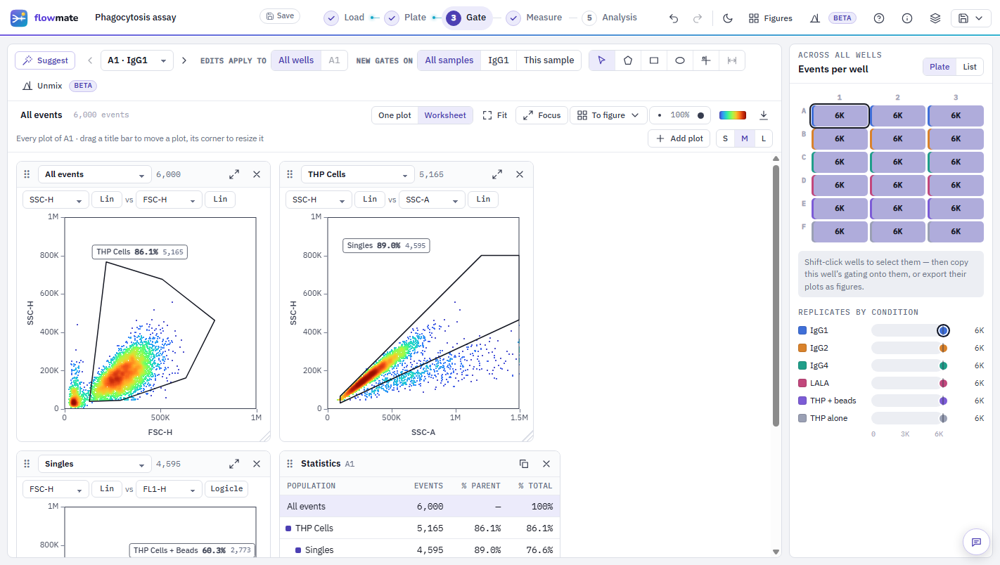

Flow cytometry analysis for the whole plate
Gate every well at once, compensate, and get graphs with the statistics done. Nothing to install; your data stays on your computer.

How it works
Five steps, from FCS files to a figure. The demo plate in the app walks through them.
- LoadDrop FCS files or a folder. Wells are read from the file names.
- PlateSelect wells and name conditions. Mark controls.
- GateDraw or accept suggested gates. Every well updates live.
- MeasurePick populations and statistics, one row per well.
- AnalysisGraph by condition with t tests, ANOVA, Tukey or Dunnett.
Validated
Checked against independent tools on published data sets that FlowMate was not built on, with the pass criteria set in advance.
| Reading FCS files (FCS 3.0 / 3.1; BD, Cytek) vs FlowKit 1.3.2 | Bit-identical |
| Compensation, event by event vs FlowKit · Beckman CytExpert | Equal to 6×10⁻⁸ · 1.2×10⁻⁷ |
| Gate counts on FlowJo workspaces (1,701 counts) vs FlowKit 1.3.2 | 92 % exact or within 2 events / 0.1 % |
| Rule-based gating of a published experiment (11 tubes) vs Paper's values (CytExpert) | All within 3 % |
| t tests, ANOVA, Tukey, Dunnett vs GraphPad Prism 11 | Match Prism's printed digits |
| Nested (mixed-model) tests on cells vs R nlme | Match to 1×10⁻⁵ |
Questions
Is FlowMate free?
Yes. FlowMate is free and open source under the MIT licence: no account, no licence key, no limits on files or events. You may copy and adapt the code.
Is my data uploaded anywhere?
No. FCS files are read inside your browser tab and never leave your computer; FlowMate has no server. Saved analyses are kept in your browser. You can also download FlowMate as one HTML file and use it offline.
Can I save my analysis?
Yes. File → Save (Ctrl+S) keeps the analysis — data, gates, conditions, tables and graphs — under My analyses in your browser, and it keeps saving as you work. Reopen it any time from the start page. To move it to another computer or a colleague, File → Share writes it as one .flowmate file.
How do I analyse a plate, step by step?
1. Load: drop the FCS files or a folder; wells are read from the file names. 2. Plate: select wells and name each condition, and mark controls. 3. Gate: accept the suggested Cells, Singlets and positive gates or draw your own; every well updates live. 4. Measure: choose populations and statistics, one row per well. 5. Analysis: make a graph by condition and pick the comparisons; the test and P values appear beside it. The Guide in the app walks through this on a demo plate.
Which files can FlowMate open?
FCS 2.0, 3.0 and 3.1 files from any cytometer, FlowJo 10 workspaces (.wsp) with their gates, groups and compensation, and Gating-ML 2.0. It can export Gating-ML, CSV tables, PNG/SVG figures and an HTML report.
Is FlowMate a FlowJo alternative?
For gating, compensation, per-well statistics and plate experiments, yes: it imports FlowJo workspaces and shows FlowJo's count next to its own for every population. FlowMate is independent and not affiliated with FlowJo or BD.
How accurate is it?
FCS values are bit-identical to FlowKit, an independent open-source reader; compensated values match FlowKit and Beckman CytExpert to about 1e-7. Gate counts are compared population by population with FlowKit on published data sets, and the statistics with GraphPad Prism and R. The full validation report is public.
What statistics does it do?
Unpaired and paired t tests, ordinary and repeated-measures one-way ANOVA with Tukey or Dunnett multiple comparisons, and nested t tests / nested one-way ANOVA (a linear mixed model with the well as a random effect) for cell-level data — the same tests and numbers as GraphPad Prism.
Does it do compensation and spectral unmixing?
Compensation uses the matrix stored in the files, one computed from single-stain controls, or an imported matrix. Spectral unmixing from single-stain controls is available as a beta tool.
Can I contribute or build my own version?
Yes — fork it on GitHub and adapt it, or email rlshir302010@gmail.com to build it together: new features, more instruments, or validation on your data.